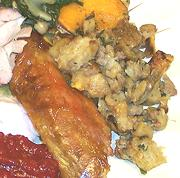

|
Cornbread & Sausage StuffingNorth America | ||||
| Stuffs: Effort: Sched: DoAhead: |
1 bird *** 1 hr Yes |
A savory stuffing for a whole turkey, Of course you can make it as a dressing (stuffing cooked separately - Note-2), but I usually stuff the turkey with hot stuffing moments before putting it in the oven. | |||
|
|
1 1 6 12 6 1 1/2 3 6 1 tt tt --- 2 2 |
oz oz oz oz c c cl oz # --- c |
Cornbread (1) Black Mushroom dry Celery w/leaves Onion Bell Pepper Red Sage, fresh (2) Parsley flat leaf Garlic Bacon smoked Sausage (3) Salt Pepper -------- Stock (if cooking as dressing (3)) Eggs |
Prep
|